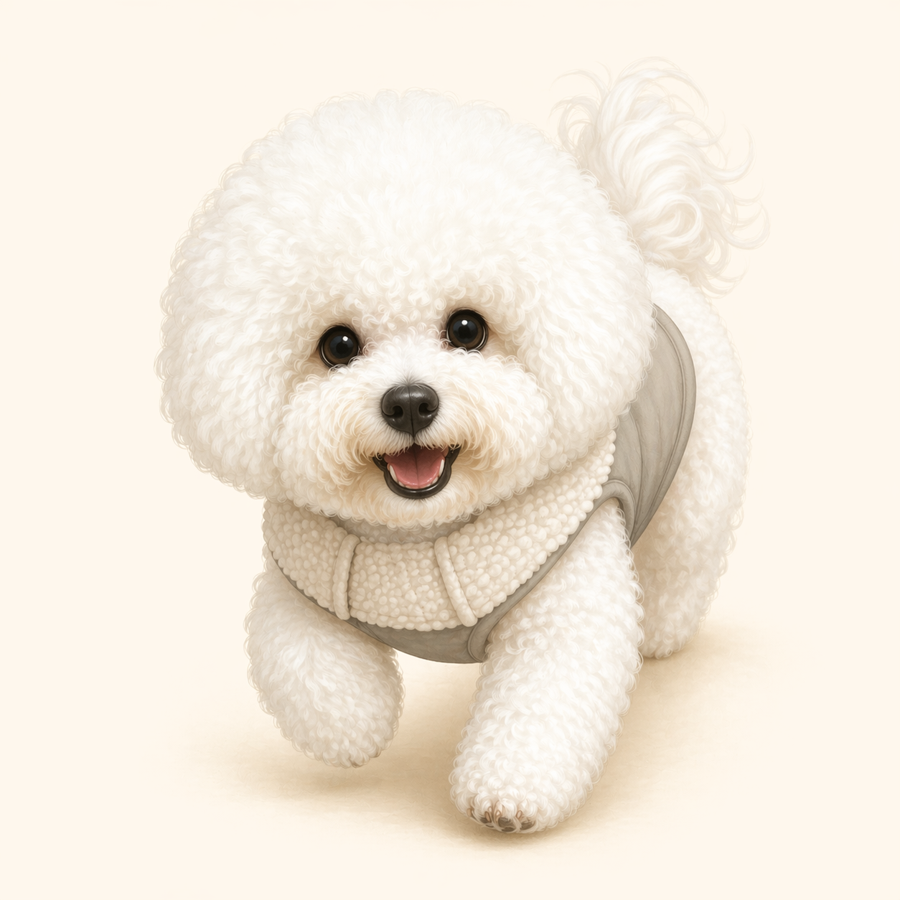
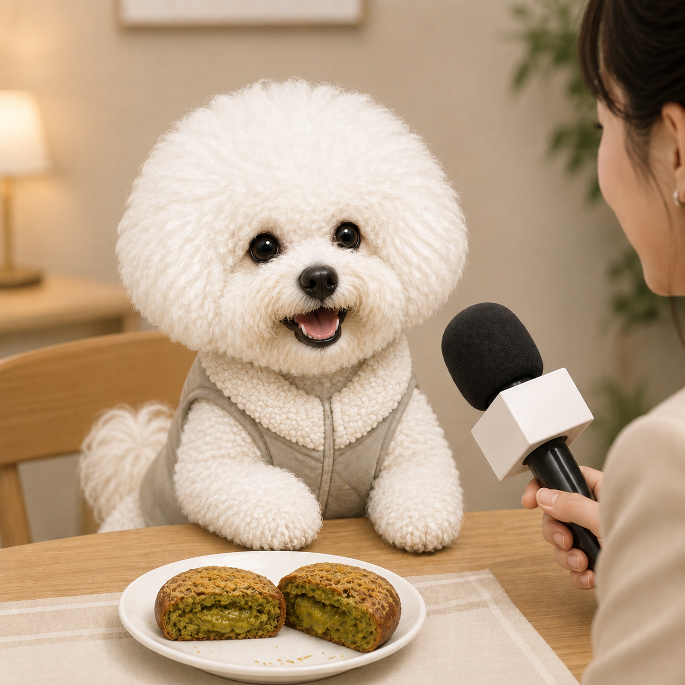

Bichon Frise
밝고 다정한 성격, 솜사탕 같은 털, 사람을 좋아하는 에너지가 가득한 작은 가족을 소개합니다.

Profile
사람과 어울리는 걸 좋아하고 분위기를 환하게 만드는 애교가 많습니다.
풍성한 털은 빗질과 미용이 필요하지만, 그만큼 귀여운 실루엣이 살아납니다.
짧은 놀이와 산책을 꾸준히 해주면 집 안에서도 밝고 안정적으로 지냅니다.
Videos
